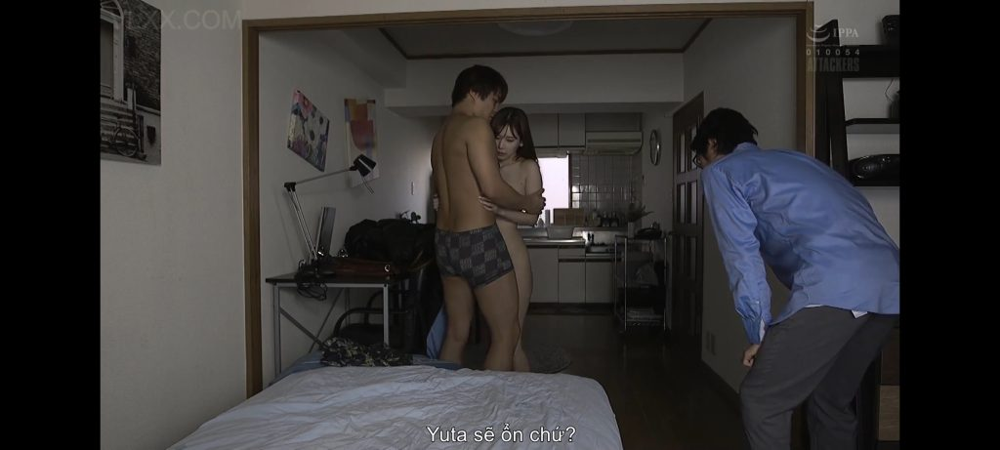

**Chương 71: Vở Kịch Đen Tối**
—
**Phần 1: Cuộc Hẹn**
Sáng thứ bảy, ánh nắng nhẹ nhàng lọt qua rèm cửa sổ. Ông Quân ngồi trong phòng khách, điện thoại trên tay, tin nhắn đã gửi đi từ đêm qua:
*”Sáng mai con sang nhà bố nhé. Bố cần lấy mẫu tinh trùng kiểm tra khả năng thụ thai. Bố muốn chắc chắn… bố muốn chính mình sẽ thụ thai cho Hà.”*
Ngọc Anh đọc tin nhắn trong phòng ngủ nhỏ của vợ chồng cô, tim đập nhanh. Cô biết đây chỉ là cái cớ. “Kiểm tra tinh trùng” – cô là bác sĩ, cô hiểu rõ quy trình, nhưng cũng hiểu rõ ý đồ của ông Quân. Dù vậy, cơ thể cô vẫn nóng lên khi nghĩ đến việc sắp được gặp ông.
9 giờ sáng. Tiếng chuông cửa vang lên.
Ông Quân mở cửa. Ngọc Anh đứng ngoài, mặc áo sơ mi trắng dài tay và váy ngắn đen, trông chuyên nghiệp nhưng gợi cảm. Cô cầm theo túi y tế nhỏ, bên trong có ống nghiệm, găng tay, và dụng cụ lấy mẫu.
“Con vào đi.” – Ông Quân mỉm cười, ánh mắt đánh giá từ đầu đến chân.
“Hoàng đâu ạ?” – Ngọc Anh hỏi, giọng hơi run.
“Nó đi gặp Thành rồi. Chiều mới về.” – Ông Quân đóng cửa, khóa trái cẩn thận. “Chỉ có bố và con thôi. Yên tâm.”

Ngọc Anh bước vào phòng khách, đặt túi y tế lên bàn. Cô nhìn ông Quân, cố giữ vẻ mặt nghiêm túc của một bác sĩ: “Bác muốn kiểm tra khả năng thụ thai ạ? Theo lý thuyết, ở tuổi bác…”
“Bố biết.” – Ông Quân cắt ngang, tiến lại gần. “Nhưng bố muốn chắc chắn. Bố muốn biết tinh trùng của bố còn khỏe không, còn đủ để thụ thai cho Hà không. Con lấy mẫu cho bố đi.”
Ngọc Anh nuốt nước bọt. Cô biết quy trình lấy mẫu tinh trùng – thường là qua thủ dâm. Nhưng khi nhìn vào mắt ông Quân, cô hiểu đây sẽ không phải là quy trình y tế bình thường.
—
**Phần 2: Lấy Mẫu**
“Con… con cần chuẩn bị dụng cụ…” – Ngọc Anh lắp bắp, mở túi y tế.
“Không cần đâu.” – Ông Quân nắm cổ tay cô, kéo cô đứng dậy. “Bố thích cách truyền thống hơn. Con sẽ lấy mẫu bằng tay… và miệng.”
Ngọc Anh đỏ mặt, nhưng không chống cự khi ông Quân dẫn cô vào phòng ngủ. Căn phòng được kéo rèm kín, ánh sáng mờ ảo từ đèn ngủ tạo nên bầu không khí u ám và dâm đãng.
Ông Quân ngồi xuống mép giường, tuột quần xuống. Con cặc to lớn bật ra, đã cương cứng từ lúc nào – đỏ au, gân nổi, đầu khấu chảy nước nhờn trong suốt.
“Đến đây.” – Ông Quân vẫy tay. “Lấy mẫu đi.”
Ngọc Anh quỳ xuống giữa hai chân ông Quân. Tay cô run run nắm lấy dương vật đang cương cứng. Ngay từ khoảnh khắc chạm vào, cô đã nhận ra sự khác biệt rõ rệt.
*To… cứng… nóng hơn nhiều.*
Cô nhớ lại lần trước ở phòng khám, khi cô cũng quỳ như thế này trước Hoàng. Dương vật của Hoàng chỉ ở mức trung bình, cô có thể dễ dàng bao trùm bằng một tay, sục lên xuống không mấy khó khăn. Còn bây giờ, bàn tay nhỏ của cô thậm chí không thể nắm hết chu vi của ông Quân. Những đường gân nổi lên rõ ràng dưới lớp da đỏ au, đầu khấc to và bóng nhẫy vì nước nhờn đang rỉ ra không ngừng.
*Khác biệt quá… Đúng là khác biệt.*
Ngọc Anh bắt đầu sục. Chậm rãi lúc đầu, từ gốc lên đến đầu, ngón cái day nhẹ vào điểm nhạy cảm dưới đầu khấc. Mỗi lần tay cô trượt lên, da quy đầu bị kéo nhẹ, lộ ra phần đầu khấc căng bóng. Nước nhờn tiết ra ngày càng nhiều, làm cho tiếng “ướt ướt” vang lên rõ ràng trong căn phòng yên tĩnh.
Cô nhớ Hoàng. Nhớ cảm giác tay mình cầm lấy dương vật của anh ấy, nhớ ánh mắt vừa xấu hổ vừa kích thích của Hoàng lúc đó. Lúc ấy cô chỉ muốn “trả nợ” một cách nhanh gọn. Còn bây giờ, trước ông Quân, cô lại thấy mình đang bị cuốn hút bởi sự khác biệt quá lớn này.
*Hoàng… con trai của ông ấy… nhỏ hơn nhiều. Còn ông này… như muốn nuốt chửng cả bàn tay mình.*
Ông Quân nhìn xuống, thấy Ngọc Anh đang sục với vẻ mặt vừa tập trung vừa đê mê. Anh khẽ cười:
“Nhớ lần sục cho Thành rồi à, hay ô Lương? Khác nhau nhiều đúng không?”
Ngọc Anh giật mình, mặt đỏ bừng, nhưng tay không dừng. Cô tăng tốc, hai tay cùng tham gia – một tay sục thân, một tay xoa bóp nhẹ hai hòn dái nặng trĩu. Dương vật ông càng lúc càng cứng, giật giật trong lòng bàn tay cô như có nhịp sống riêng.
“Bác… to quá… con cầm không hết…” – Cô thì thầm, giọng đã khàn đi vì kích thích.
“Cứ sục đi. Lấy mẫu cho bố. Lấy thật nhiều.”
Ngọc Anh cúi thấp hơn, hơi thở nóng hổi phả vào đầu khấc. Cô sục nhanh và mạnh hơn, nước nhờn bắn ra thành từng sợi mỏng mỗi khi tay cô vuốt mạnh. Trong đầu cô lúc này chỉ còn hai hình ảnh chồng chéo: bàn tay mình đang cầm cặc Hoàng ngày trước, và bàn tay mình đang cố gắng bao lấy cặc ông Quân lúc này. Sự so sánh ấy khiến cô càng thêm kích động.
Ông Quân rên khàn, hông hơi nhấp theo nhịp tay cô. Một lúc sau, anh ra lệnh:
“Miệng… dùng miệng lấy mẫu luôn.”
Ngọc Anh há miệng, đón lấy đầu khấc đưa vào. Cô liếm quanh, rồi ngậm sâu, đầu lưỡi quét qua những đường gân nổi. Ông Quân đặt tay lên đầu cô, không ép mạnh nhưng cũng đủ để cô hiểu ý. Cô cố gắng nuốt sâu hơn, nước mắt ứa ra vì bị chạm họng, nhưng vẫn không dừng.
Tay cô vẫn sục phần gốc không thể ngậm hết. Cảm giác vừa bị đè ép, vừa chủ động lấy mẫu khiến tâm lý cô rối loạn. Cô vừa xấu hổ vì đang làm chuyện này với bố của Hoàng, vừa không thể phủ nhận cơ thể mình đang phản ứng rất mạnh.
“Ưm… đúng rồi… lấy mẫu đi… lấy hết tinh trùng của bố ra…” – Ông Quân rên lên.
Ngọc Anh sục và mút đồng thời, càng lúc càng nhanh. Cô cảm nhận rõ dương vật ông to thêm, cứng thêm, giật giật liên tục trong miệng. Một khoảnh khắc sau, ông rút ra khỏi miệng cô, tay cầm lấy thân cặc sục mạnh vài cái rồi bắn tinh – từng đợt trắng đục, đặc sệt bắn lên ngực, cổ và một phần mặt Ngọc Anh. Vài giọt rơi đúng vào ống nghiệm cô vội vàng đưa ra đỡ.
Ông Quân rên dài, thân thể hơi co lại vì khoái cảm. Ngọc Anh vẫn quỳ đó, thở dốc, tinh dịch của ông dính đầy ngực và cằm. Cô nhìn ống nghiệm đã có mẫu, rồi nhìn lại dương vật vẫn còn cứng ngắc trước mặt mình, trong đầu chỉ còn một suy nghĩ:
*Khác biệt quá… Hoàng không thể so được với ông ấy.*
Ông Quân nắm cổ tay cô kéo lại, giọng còn khàn:
“Chưa xong đâu. Cặc bố vẫn còn cứng. Con phải làm sạch nó.”
—
**Phần 3: Bịt Mắt và Trói Buộc**
Ngọc Anh nhìn xuống – quả thực, dù vừa xuất tinh, cặc ông Quân vẫn cương cứng ngắc, đỏ au và đầy nước nhờn. Cô biết ông muốn gì.
Cô cúi xuống, lè lưỡi liếm sạch tinh dịch còn dính trên thân cặc, từ gốc đến đầu. Lưỡi cô quét qua đường gân, môi ngậm lấy đầu khấu mút nhẹ, làm sạch từng tấc da.
“Ngoan… liếm sạch đi…” – Ông Quân rên rỉ, tay xoa đầu cô.
Khi cặc đã sạch bong, ông Quân đứng dậy, kéo Ngọc Anh đứng lên. Ánh mắt ông lóe lên một tia gian xảo – kế hoạch đã đến lúc thực hiện.
“Hôm nay… chúng ta chơi khác một chút.” – Ông Quân thì thầm, lấy ra một chiếc khăn bịt mắt màu đen từ ngăn kéo. “Bố muốn con bịt mắt lại. Chỉ cảm nhận bằng da thịt thôi.”
Ngọc Anh hơi do dự, nhưng rồi cũng gật đầu. Cô quay lưng lại, để ông Quân buộc khăn quanh mắt, thắt chặt phía sau. Thế giới trở nên tối đen, chỉ còn tiếng thở và mùi nam tính nồng nặc.
“Cởi đồ ra.” – Ông Quân ra lệnh.
Ngọc Anh run run cởi từng nút áo sơ mi, tuột váy xuống. Cô đứng đó, trần truồng, chỉ mặc mỗi quần lót ren màu đen. Ông Quân nhìn cơ thể cô – bầu vú căng tròn, eo thon, đùi trắng nõn – khóe miệng nhếch lên.
“Đẹp… đẹp quá…” – Ông thì thầm, rồi lấy ra hai sợi dây mềm từ dưới gối. “Nằm xuống giường.”
Ngọc Anh nằm ngửa xuống giường, hai tay dang ra hai bên. Ông Quân cột hai cổ tay cô vào hai cạnh đầu giường, chân cô cũng bị banh ra và cột chặt. Cô nằm đó, trần truồng, bịt mắt, trói chặt – hoàn toàn bất lực và phơi bày.
“Bố… bố định làm gì…” – Ngọc Anh hỏi, giọng run run.
“Im lặng.” – Ông Quân đặt ngón tay lên môi cô. “Chỉ cảm nhận thôi. Không được nói. Không được hỏi.”
Ông Quân đứng dậy, nhìn xuống thân thể bị trói của Ngọc Anh, rồi nhìn về phía cửa – nơi Hoàng đang ẩn nấp theo kế hoạch từ đêm qua. Ông gật đầu nhẹ, ra hiệu cho con trai.
—
**Phần 4: Sự Thay Thế**
Hoàng đứng ngoài cửa, run rẩy từ đầu đến chân. Anh đã chờ đợi khoảnh khắc này từ sáng, từ đêm qua, từ cả thập kỷ trước khi anh nhường Ngọc Anh cho Thành. Anh nhìn vào phòng qua khe cửa hé – thấy Ngọc Anh nằm trần truồng, bịt mắt, trói chặt trên giường.
*Cô ấy đẹp quá…* – Hoàng thở dốc, dương vật trong quần đã cương cứng từ lúc nào.
Ông Quân cởi hết phần quần áo còn lại, để lộ toàn bộ thân hình săn chắc dù đã ngoài sáu mươi. Anh trườn lên cơ thể Ngọc Anh đang bị trói và bịt mắt. Da thịt nóng hổi của ông áp sát vào da trắng của cô. Dương vật cứng ngắc cọ nhẹ lên đùi trong, lên bụng dưới, khiến Ngọc Anh rùng mình.
Ông cúi xuống gần tai cô, giọng trầm và đầy quyền lực:
“Từ nay trở đi, hãy gọi bác là anh. Xưng hô rõ ràng: anh – em. Hiểu chưa?”
Ngọc Anh thở hổn hển sau lớp khăn đen. Cô đang ở trạng thái bị kích thích đến mức gần như mất lý trí. Giọng cô run rẩy nhưng đầy quyến rũ:
“Em… em hiểu rồi… Em yêu anh, Quân… Cho em cảm nhận của anh đi… anh ơi…”
Ông Quân hài lòng. Anh không đâm vào ngay. Thay vào đó, ông cúi xuống, đẩy hai chân cô banh rộng hơn, rồi vùi mặt vào giữa hai đùi. Lưỡi ông liếm dài từ dưới lên, quét mạnh qua khe lồn đã ướt át. Ngọc Anh rên lên thành tiếng, thân thể giật nhẹ dù bị trói.
Ông bú mạnh hơn. Lưỡi ông đâm vào trong, hút lấy nước nhờn, rồi trở ra day liên tục vào hột le. Tiếng “chụt chụt” ướt át vang lên rõ ràng. Ngọc Anh không còn kìm được:
“Anh… anh ơi… ư… sướng quá… lưỡi anh… liếm mạnh nữa… em ướt hết rồi… ư ư…”
Nước lồn tiết ra ngày càng nhiều, dính đầy miệng và cằm ông Quân. Cô rên dâm đãng, hông cố nhấc lên dù bị dây trói giữ chặt, muốn được bú sâu hơn.
Ông Quân biết thời cơ đã đến. Anh ngẩng đầu lên, liếc về phía cánh cửa đang hé. Hoàng đang đứng đó, mắt đỏ ngầu, thở gấp. Ông Quân gật đầu rất nhẹ – ra hiệu.
Hoàng bước vào trong phòng.
Anh không tiến lại ngay. Anh chỉ đứng cách giường khoảng hai mét, nhìn chằm chằm. Tim đập thình thịch đến mức anh nghe rõ trong tai. Từ trước đến nay, dù khi làm tình với Hà, dương vật anh cũng chưa từng cứng đến mức này. Nó căng cứng đến đau, gân xanh nổi rõ, đầu khấc liên tục rỉ nước nhờn trong suốt.
Ánh mắt Hoàng dán chặt vào cơ thể Ngọc Anh.
Cô đang nằm trần truồng hoàn toàn, bịt mắt, hai tay và hai chân bị trói chữ M. Bầu ngực căng tròn phập phồng theo từng hơi thở gấp. Núm vú hồng và cứng vì kích thích. Eo thon, bụng phẳng, lông mu đen nhánh được cắt gọn, và bên dưới là khe lồn đỏ hồng đang há ra, bóng nhẫy nước nhờn vì vừa bị ông Quân bú. Đùi trắng nõn vẫn còn dấu đỏ vì bị tét. Toàn bộ thân thể cô đang run nhẹ vì khoái cảm chưa được thỏa mãn.
Hoàng cảm thấy họng khô. Bao nhiêu năm thầm thích, bao nhiêu đêm tưởng tượng, giờ người con gái ấy đang nằm trước mặt anh như một món quà bị trói chặt, bịt mắt, hoàn toàn bất lực.
Anh từ từ cởi hết quần áo. Dương vật bật ra, cứng ngắc hơn cả những gì anh từng trải qua. Anh bước lại gần giường, từng bước một, như sợ làm vỡ tan khoảnh khắc này.
Khi đến sát bên, anh quỳ xuống. Tay run run đưa ra.
Ngón tay anh chạm nhẹ lên cánh tay Ngọc Anh – da cô mịn và nóng. Anh vuốt dọc từ cổ tay bị trói xuống đến vai, rồi xuống bầu ngực. Lòng bàn tay anh bao lấy một bên ngực, cảm nhận độ đàn hồi, ngón cái day nhẹ lên núm vú đang cứng. Ngọc Anh rên nhẹ, tưởng vẫn là ông Quân.
Hoàng nuốt nước bọt. Tay anh trượt xuốngeo, vuốt ve vòng bụng dưới, rồi chạm đến vùng lông mu mềm mại. Ngón tay anh lướt qua từng sợi lông, cảm nhận độ mượt, trước khi đi xuống thấp hơn, chạm vào hai mép lồn đang ướt át và nóng hổi.
Anh run lên vì xúc động và kích thích. Người con gái từng là crush, từng là tiếc nuối lớn nhất của đời anh, giờ đang nằm dưới tay anh, hoàn toàn không biết người đang chạm vào mình là ai.
Ông Quân đứng sang một bên, khoanh tay, nhìn hai người với nụ cười gian xảo. Kế hoạch đang diễn ra hoàn hảo.
—
Ông Quân lùi ra phía sau, khoanh tay đứng nhìn. Trên tủ đầu giường, chiếc điện thoại đã được ông kê sẵn từ trước, camera hướng thẳng xuống giường, ghi lại toàn bộ góc nhìn rõ ràng nhất: thân thể Ngọc Anh bị trói, bịt mắt, và người đàn ông sắp đâm vào cô.
Hoàng quỳ giữa hai chân Ngọc Anh. Tay anh vẫn còn run khi chạm vào da thịt nóng hổi của cô. Tim đập đến mức anh sợ cô nghe thấy. Bao nhiêu năm thầm yêu, bao nhiêu đêm nằm tưởng tượng chính mình được chạm vào cô… giờ đây tất cả đang trở thành hiện thực theo cách điên rồ nhất.
*Đây là Ngọc Anh… người mình từng viết thư tình mà không dám gửi. Người mình đã nhường cho Thành. Người chiều nay vừa rên tên mình trong lúc bị bố đụ. Giờ mình sẽ là người đụ cô ấy.*
Dương vật anh cứng đến mức đau. Chưa bao giờ, dù khi làm tình với Hà, nó lại căng cứng và nóng hổi đến thế này. Đầu khấc liên tục rỉ nước nhờn, nhỏ giọt xuống khe lồn đang há ra của Ngọc Anh.
Hoàng cúi xuống, hai tay chống hai bên thân thể cô. Anh đưa đầu khấc cọ nhẹ lên hai mép lồn ướt át. Cảm giác nóng, trơn, mềm mại khiến anh suýt rên thành tiếng. Anh phải cắn chặt môi mới giữ được im lặng.
Ngọc Anh tưởng vẫn là ông Quân. Cô khẽ rên, hông nhấc lên đón nhận:
“Anh… anh ơi… đừng cọ nữa… vào đi… em muốn cảm nhận của anh…”
Hoàng suýt mất kiểm soát ngay lúc đó. Anh hít một hơi thật sâu, rồi từ từ đẩy vào.
Đầu khấc chui vào trước. Cảm giác chặt chẽ, nóng rực bao lấy anh khiến đôi mắt anh trợn ngược một giây. Anh tiếp tục đẩy sâu hơn, từng centimet một, cho đến khi toàn bộ dương vật biến mất bên trong Ngọc Anh. Anh phải dừng lại, thở hổn hển, trán đầy mồ hôi.
*Chết tiệt… chặt quá… nóng quá… Đây là lồn của Ngọc Anh… mình đang ở trong người cô ấy…*
Ông Quân đứng bên cạnh, nhìn màn hình điện thoại đang quay, khóe miệng nhếch lên. Anh thì thầm rất nhỏ, chỉ đủ để Hoàng nghe:
“Đụ đi. Đừng nhẹ nhàng. Con bé này thích mạnh.”
Hoàng bắt đầu nhấp. Những nhịp đầu còn run rẩy vì quá kích thích, nhưng chỉ sau vài cái, anh đã tăng tốc. Cảm giác được đụ người con gái mình từng yêu thầm, trong khi cô bị bịt mắt và tưởng mình là người khác, khiến anh vừa sướng vừa điên loạn. Anh nắm lấy hai bên hông Ngọc Anh, thúc mạnh hơn, sâu hơn.
Mỗi lần đâm vào, anh lại nhìn xuống chỗ hai người đang nối liền. Dương vật mình đang ra vào trong lồn cô, nước nhờn bắn ra thành từng giọt nhỏ. Hình ảnh ấy cộng với việc biết rõ đang bị camera ghi lại khiến Hoàng kích thích đến mức chóng mặt.
Ngọc Anh rên lên thành tiếng, vẫn tưởng là ông Quân:
“Anh… mạnh nữa… ư… đụ em đi… cặc anh sâu quá… em yêu anh… ư ư…”
Hoàng nghe những lời ấy mà gần như muốn bùng nổ. Anh cúi xuống gần tai cô, dù biết không được nói, nhưng hơi thở nóng hổi của anh vẫn phả vào cổ cô. Anh đụ mạnh hơn, giường kêu creak nhẹ theo nhịp.
Ông Quân đứng quay video, thỉnh thoảng zoom gần vào chỗ hai người đang giao hợp, đảm bảo ghi lại rõ từng chi tiết. Ánh mắt ông đầy thỏa mãn. Kế hoạch đang diễn ra hoàn hảo hơn cả mong đợi.
Hoàng thì đã mất hết lý trí. Trong đầu anh lúc này chỉ còn một ý nghĩ lặp đi lặp lại:
*Mình đang đụ Ngọc Anh… Mình đang đụ vợ của Thành… Và cô ấy đang rên vì mình…*
Anh tăng tốc điên cuồng, hai tay siết chặt eo cô, mỗi cú thúc đều đậm và sâu, như muốn in dấu của mình vào bên trong người cô mãi mãi.
—
Hoàng cúi xuống. Dù biết không được lên tiếng, anh vẫn không kìm được. Anh hôn lên môi Ngọc Anh.
Nụ hôn ban đầu còn hơi run vì quá kích thích, nhưng chỉ sau vài giây đã trở nên nồng nhiệt và sâu. Hoàng há miệng, lưỡi anh thọc vào, quấn lấy lưỡi cô, hút mạnh, thăm dò từng góc miệng. Kỹ thuật hôn của anh vốn dĩ rất tốt – mềm mại, nhịp nhàng, vừa dịu dàng vừa đầy dục vọng.
Ngọc Anh giật mình rõ rệt sau lớp khăn bịt mắt. Cô bất ngờ đến mức thân thể hơi cứng lại một giây.
*Bác.. anh… hôn giỏi vậy sao? Lần trước bác chưa từng hôn sâu và kỹ đến thế này…*
Cảm giác lưỡi đang quấn lấy lưỡi mình quá khéo léo, quá biết cách lấy đi hơi thở khiến cô dần tan chảy. Cô đáp lại nụ hôn một cách bản năng, miệng há ra đón nhận, lưỡi cô cũng quấn lấy lưỡi anh. Tiếng nước bọt và hơi thở nóng hòa vào nhau.
Hoàng hôn cô như muốn bù đắp bao năm thầm thích. Anh hôn sâu, hôn lâu, một tay vẫn chống bên cạnh, tay kia thì xoa nắn bầu ngực cô, ngón tay day mạnh núm vú.
Khi rời môi nhau, cả hai đều thở dốc. Ngọc Anh rên nhẹ:
“Anh… hôn giỏi quá… em không ngờ…”
Hoàng không trả lời. Anh chỉ chỉnh lại vị trí, rồi bắt đầu nhấp. Dương vật anh trượt vào trong lồn ướt át của cô. Cảm giác chặt chẽ khiến anh phải cắn môi để không rên thành tiếng.
Ngọc Anh hơi khẽ nhăn mặt sau lớp khăn. Cô cảm nhận rõ sự khác biệt.
*Nhỏ hơn… ngắn hơn một chút… Không sâu bằng lúc nãy.*
Nhưng ngay lập tức cô tự giải thích cho mình:
*Chắc vì bác vừa mới xuất tinh xong… nên chưa cứng hết cỡ, chưa vào hết. Bác đang cố nhẹ nhàng với mình…*
Nghĩ vậy, cô càng thêm xúc động. Cô chủ động nhấc hông lên đón nhận từng nhịp của Hoàng, miệng rên dâm đãng:
“Anh… ư… vào sâu hơn một chút nữa đi… em chịu được mà… đụ em đi anh… ư ư…”
Hoàng nghe những lời ấy mà gần như muốn điên. Anh tăng tốc, hai tay nắm chặt eo cô, thúc mạnh hơn. Dù dương vật anh không to bằng ông Quân, nhưng nhờ sự kích thích tột độ và kỹ thuật, anh vẫn đâm khá sâu, mỗi lần rút ra rồi đâm vào đều tạo ra tiếng “bạch bạch” ướt át.
Ngọc Anh rên to hơn, đầu ngửa ra sau trên gối:
“Anh ơi… sướng quá… cặc anh đâm trúng chỗ em thích… ư… mạnh nữa… đụ em như lúc nãy đi… em muốn anh xuất vào trong… cho em tinh trùng của anh… ư ư… em yêu anh…”
Hoàng cúi xuống hôn cô lần nữa, vừa hôn vừa đụ. Lưỡi anh và lưỡi cô quấn lấy nhau trong khi hông anh liên tục thúc mạnh. Cảm giác được nghe Ngọc Anh rên “em yêu anh” trong lúc mình đang ở trong người cô khiến anh kích thích đến mức mắt đỏ ngầu, mồ hôi nhỏ thành từng giọt xuống ngực cô.
Ông Quân đứng bên cạnh, vẫn giữ camera quay cận cảnh. Anh nhìn hai người với vẻ hài lòng, thỉnh thoảng còn khẽ gật đầu như đang thưởng thức vở kịch do chính mình đạo diễn.
Hoàng thì đã mất hết lý trí. Anh chỉ còn biết đụ, biết hôn, biết lắng nghe những tiếng rên dâm đãng của người con gái từng là ước mơ bao năm của mình.
Hoàng đụ ngày càng mạnh. Cảm giác lồn Ngọc Anh siết chặt lấy dương vật anh, cộng với những tiếng rên “em yêu anh” liên tục khiến anh không còn giữ được nữa. Anh ôm chặt lấy eo cô, hông giật giật liên hồi, rồi rên khẽ trong cổ họng khi xuất tinh.
Từng đợt tinh dịch nóng hổi phun sâu vào trong lồn Ngọc Anh. Anh đẩy thật sâu, muốn đổ hết tất cả vào người cô. Ngọc Anh cảm nhận rõ dòng chảy ấm áp đang tràn đầy bên trong, cô cũng co giật theo, rên lên cao:
“Anh… anh xuất rồi… ư… đầy quá… em nhận hết… em yêu anh…”
Hoàng nằm đè lên người cô vài giây, thở hổn hển, vẫn còn cắm sâu bên trong. Tim anh đập như muốn vỡ. Anh vừa xuất tinh vào người con gái mình từng yêu thầm bao năm. Cảm giác đó vừa khoái lạc tột độ vừa tội lỗi đến mức anh muốn khóc.
Ông Quân đứng bên cạnh gật đầu. Anh đặt điện thoại xuống, bước lại gần. Hoàng hiểu ý, từ từ rút ra. Dương vật anh tuột khỏi lồn Ngọc Anh với tiếng “nhẹp” ướt át, tinh dịch trắng đục theo đó chảy ra thành dòng.
Ngọc Anh còn đang thở dốc thì đột nhiên cảm nhận một thứ gì đó hoàn toàn khác.
Ông Quân không cho cô kịp nghỉ. Anh quỳ giữa hai chân cô, cầm dương vật to lớn của mình – vẫn còn cứng ngắc – kê vào cửa lồn đang há ra và đầy tinh dịch của Hoàng, rồi đẩy mạnh một cái.
“Á…!”
Ngọc Anh hét lên. Cảm giác quá rõ ràng. Dương vật đang đâm vào lúc này to hơn, dài hơn, căng đầy hơn rất nhiều so với lúc nãy. Thành âm đạo bị giãn ra đến mức cô thấy hơi đau. Nó đâm sâu đến tận cùng chỉ trong một cú thúc.
*Khác… khác quá… Lúc nãy nhỏ hơn, nhẹ nhàng hơn… Giờ thì… như một người đàn ông khác…*
Nhưng ngay lập tức cô tự thuyết phục mình:
*Chắc lúc nãy anh còn nhẹ nhàng vì vừa xuất tinh xong… Giờ anh đã lấy lại sức… nên mới mạnh bạo và to cứng như vậy…*
Ông Quân không cho cô suy nghĩ nhiều. Anh nắm chặt hai bên hông cô, bắt đầu đụ mạnh và sâu ngay từ những nhịp đầu. Mỗi cú thúc đều khiến giường kêu thành tiếng, mông Ngọc Anh rung lên rõ rệt.
Ngọc Anh rên như phát điên. Cảm giác bị lấp đầy hoàn toàn, bị đâm đến tận tử cung khiến cô mất hết kiểm soát:
“Anh… anh ơi… to quá… sâu quá… ư ư… khác lúc nãy… mạnh quá… đụ em đi… đụ chết em đi… ư… anh Quân… em chịu không nổi… nhưng đừng dừng… mạnh nữa… ư ư ư…”
Ông Quân đụ như muốn khẳng định chủ quyền. Anh vừa thúc vừa nhìn xuống chỗ tinh dịch của Hoàng đang bị đẩy ra ngoài theo từng nhịp rút vào của mình. Cảm giác chiếm lại lồn Ngọc Anh ngay sau khi con trai vừa xuất vào khiến ông hưng phấn tột độ.
Ngọc Anh thì đã hoàn toàn loạn trí. Cô rên liên tục, nước mắt chảy ra sau lớp khăn bịt mắt, miệng không ngừng thốt ra những lời dâm đãng:
Anh… đầy em quá… lúc nãy cũng xuất… giờ anh lại đụ mạnh thế này… em sắp ra lần nữa… ư… đụ em… đụ em như thú vật… em là của anh… ư ư…”
Ông Quân tăng tốc, hai tay siết chặt eo cô đến mức để lại dấu đỏ. Anh rên khàn đặc khi sắp đến giới hạn, rồi đẩy sâu hết cỡ và xuất tinh mạnh mẽ lần nữa. Từng đợt tinh dịch đặc sệt phun thẳng vào tử cung, trộn lẫn với tinh trùng của Hoàng đang còn ở bên trong.
Ngọc Anh co giật dữ dội, rên lên một tiếng dài khi lên đỉnh lần nữa. Lồn cô siết chặt lấy dương vật to lớn của ông Quân, nước dâm và tinh dịch ồ ạt chảy ra ngoài, ướt đẫm cả ga giường.
Ông Quân nằm đè lên người cô một lúc, thở hổn hển, rồi chậm rãi rút ra. Lồn Ngọc Anh há ra, hỗn hợp tinh dịch của hai bố con từ từ chảy thành dòng dài xuống đùi.
Hoàng đứng bên cạnh, nhìn cảnh tượng đó với đôi mắt đỏ ngầu, vừa thỏa mãn vừa rối loạn đến cực điểm.
Ông Quân thì chỉ cười nhẹ, nhìn con trai, rồi nhìn xuống thân thể đang run rẩy của Ngọc Anh. Vở kịch đã hoàn thành.
—
Hoàng đứng dậy, tay còn hơi run. Anh nhìn lần cuối thân thể Ngọc Anh đang nằm trên giường – lồn há ra, tinh dịch của hai bố con đang từ từ chảy ra thành dòng – rồi nhanh chóng nhặt quần áo, lén bước ra khỏi phòng, khẽ đóng cửa lại. Anh trở về phòng mình, tim vẫn đập thình thịch.
Trong phòng, ông Quân ngồi dậy bên cạnh Ngọc Anh. Anh tháo khăn bịt mắt ra một cách nhẹ nhàng. Ánh sáng mờ ảo khiến Ngọc Anh chớp mắt vài lần để làm quen. Cô vẫn còn thở dốc, toàn thân trần truồng, hai tay và hai chân vừa được tháo dây trói.
Cô ngay lập tức tựa đầu vào vai ông Quân, má áp vào da thịt nóng hổi của ông. Giọng cô còn khàn và run run vì vừa lên đỉnh:
“Anh… nãy giờ em thấy lạ lắm. Lúc đầu… cảm giác nhỏ hơn, nhẹ nhàng hơn… Rồi sau đó lại to và mạnh bạo khác hẳn. Như… như có hai người khác nhau vậy. Em không hiểu…”
Ông Quân xoa nhẹ tóc cô, giọng trầm và bình thản:
“Đó là kỹ thuật của anh đó. Lúc đầu anh cố kiểm soát, vào nhẹ để con quen. Sau thì anh mới dùng hết sức. Con sướng không?”
Ngọc Anh đỏ mặt, gật đầu yếu ớt, vẫn tựa vào vai ông:
“Sướng… sướng đến mức em tưởng như phát điên. Em chưa từng… bị như vậy.”
Ông Quân cười khẩy. Anh nhìn xuống giữa hai chân cô. Lồn Ngọc Anh vẫn còn há nhẹ, hỗn hợp tinh dịch trắng đục của cả hai bố con đang từ từ tràn ra, chảy thành từng vệt dài xuống đùi trong, ướt đẫm cả ga giường. Ông dùng ngón tay khẽ hứng một ít, rồi nói:
“May là hôm nay ngày an toàn của con. Không thì lại thêm chuyện.”
Ngọc Anh cũng nhìn xuống, thấy rõ dòng tinh trùng đang rỉ ra không ngừng, mặt càng đỏ hơn. Cô khẽ khép chân lại nhưng vẫn không tránh khỏi cảm giác nhầy nhụa đang chảy.
Ông Quân vỗ nhẹ vào mông cô:
“Mặc đồ vào đi. Hoàng sắp về đến nơi rồi. Lau sạch một chút, rồi giúp anh kiểm tra mẫu tinh trùng này nhé. Đừng để nó nghi ngờ.”
Ngọc Anh gật đầu, chậm rãi ngồi dậy. Chân cô còn run, mỗi lần cử động lại có thêm một ít tinh dịch bị đẩy ra ngoài. Cô vội lấy khăn giấy lau qua loa, mặc lại áo sơ mi và váy, dù bên trong không còn quần lót. Cảm giác trống trải và ướt át giữa hai chân khiến cô vừa xấu hổ vừa vẫn còn dư âm kích thích.
Ông Quân thì đã mặc lại quần đùi, vẻ mặt bình thản như chưa từng có chuyện gì xảy ra. Anh nhìn cô một lúc, rồi nói thêm:
“Lần sau… anh sẽ cho con cảm giác còn mạnh hơn.”
Ngọc Anh không đáp. Cô chỉ cúi đầu, tay siết chặt mép váy, cố gắng lấy lại vẻ ngoài của một bác
sĩ chuyên nghiệp trước khi Hoàng bước vào nhà.